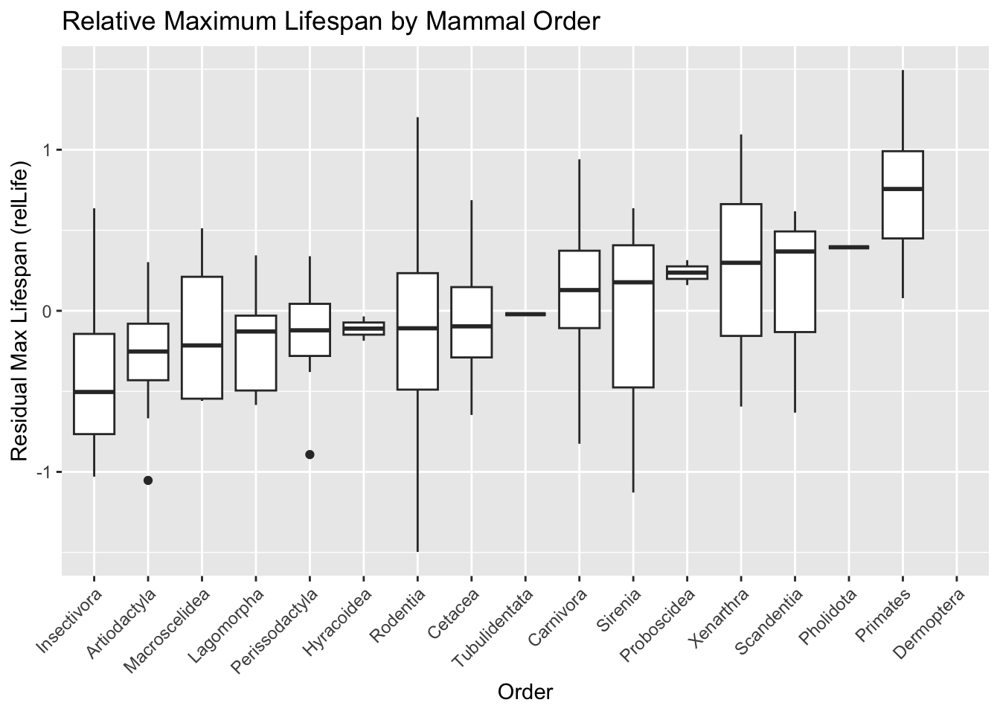
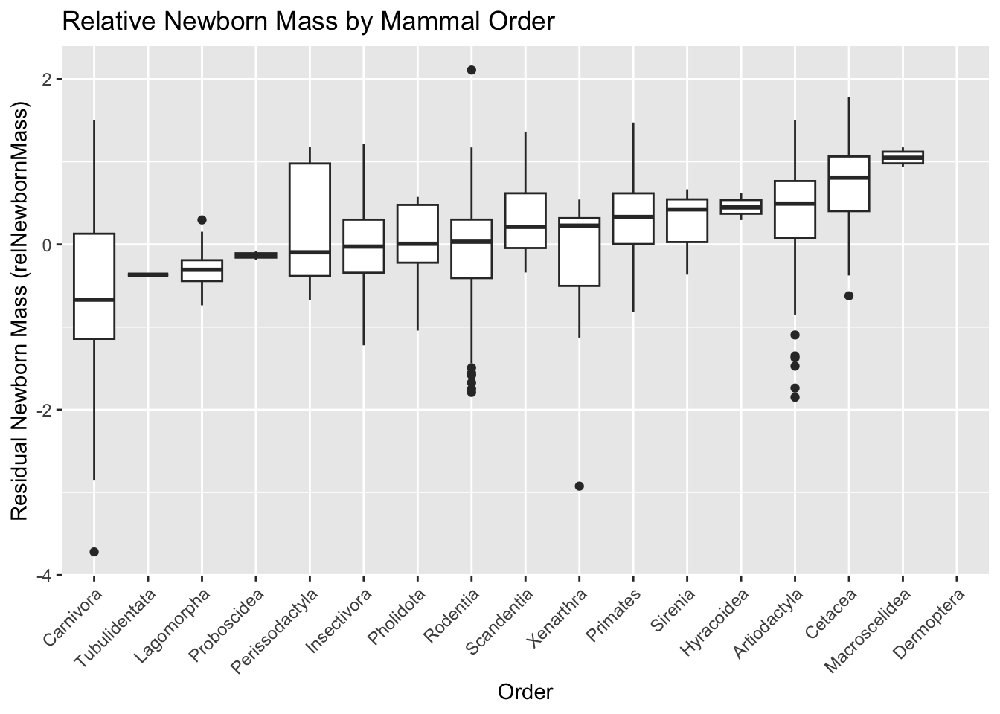
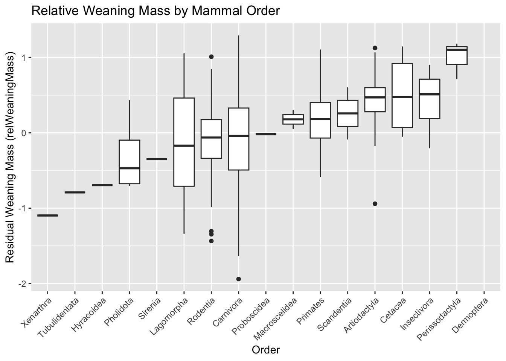
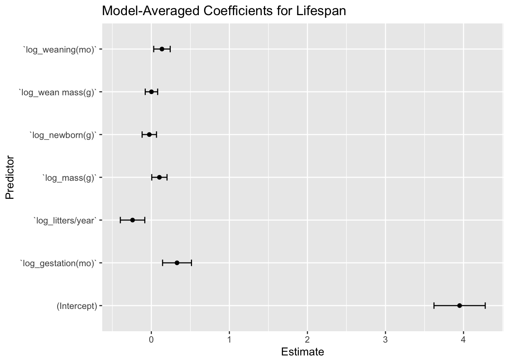

f <-"https://raw.githubusercontent.com/difiore/ada-datasets/main/Mammal_lifehistories_v2.txt"d <-read_tsv(f, col_names =TRUE)
Rows: 1440 Columns: 14
── Column specification ────────────────────────────────────────────────────────
Delimiter: "\t"
chr (4): order, family, Genus, species
dbl (9): mass(g), gestation(mo), newborn(g), weaning(mo), wean mass(g), AFR(...
num (1): refs
ℹ Use `spec()` to retrieve the full column specification for this data.
ℹ Specify the column types or set `show_col_types = FALSE` to quiet this message.
skim(d)
Data summary
Name
d
Number of rows
1440
Number of columns
14
_______________________
Column type frequency:
character
4
numeric
10
________________________
Group variables
None
Variable type: character
skim_variable
n_missing
complete_rate
min
max
empty
n_unique
whitespace
order
0
1
7
14
0
17
0
family
0
1
6
15
0
96
0
Genus
0
1
3
16
0
618
0
species
0
1
3
17
0
1191
0
Variable type: numeric
skim_variable
n_missing
complete_rate
mean
sd
p0
p25
p50
p75
p100
hist
mass(g)
0
1
3.835767e+05
5.055163e+06
-999
50
403.02
7009.17
1.490000e+08
▇▁▁▁▁
gestation(mo)
0
1
-2.872500e+02
4.553600e+02
-999
-999
1.05
4.50
2.146000e+01
▃▁▁▁▇
newborn(g)
0
1
6.703150e+03
9.091252e+04
-999
-999
2.65
98.00
2.250000e+06
▇▁▁▁▁
weaning(mo)
0
1
-4.271700e+02
4.967100e+02
-999
-999
0.73
2.00
4.800000e+01
▆▁▁▁▇
wean mass(g)
0
1
1.604893e+04
5.036502e+05
-999
-999
-999.00
10.00
1.907500e+07
▇▁▁▁▁
AFR(mo)
0
1
-4.081200e+02
5.049700e+02
-999
-999
2.50
15.61
2.100000e+02
▆▁▁▁▇
max. life(mo)
0
1
-4.902600e+02
6.153000e+02
-999
-999
-999.00
147.25
1.368000e+03
▇▁▅▁▁
litter size
0
1
-5.563000e+01
2.348800e+02
-999
1
2.27
3.84
1.418000e+01
▁▁▁▁▇
litters/year
0
1
-4.771400e+02
5.000300e+02
-999
-999
0.38
1.15
7.500000e+00
▇▁▁▁▇
refs
0
1
1.054762e+12
3.619709e+13
1
116
1229.00
1242249.75
1.368101e+15
▇▁▁▁▁
summary(d)
order family Genus species
Length:1440 Length:1440 Length:1440 Length:1440
Class :character Class :character Class :character Class :character
Mode :character Mode :character Mode :character Mode :character
mass(g) gestation(mo) newborn(g) weaning(mo)
Min. : -999 Min. :-999.00 Min. : -999.0 Min. :-999.00
1st Qu.: 50 1st Qu.:-999.00 1st Qu.: -999.0 1st Qu.:-999.00
Median : 403 Median : 1.05 Median : 2.6 Median : 0.73
Mean : 383577 Mean :-287.25 Mean : 6703.1 Mean :-427.17
3rd Qu.: 7009 3rd Qu.: 4.50 3rd Qu.: 98.0 3rd Qu.: 2.00
Max. :149000000 Max. : 21.46 Max. :2250000.0 Max. : 48.00
wean mass(g) AFR(mo) max. life(mo) litter size
Min. : -999 Min. :-999.00 Min. :-999.0 Min. :-999.000
1st Qu.: -999 1st Qu.:-999.00 1st Qu.:-999.0 1st Qu.: 1.000
Median : -999 Median : 2.50 Median :-999.0 Median : 2.270
Mean : 16049 Mean :-408.12 Mean :-490.3 Mean : -55.634
3rd Qu.: 10 3rd Qu.: 15.61 3rd Qu.: 147.2 3rd Qu.: 3.835
Max. :19075000 Max. : 210.00 Max. :1368.0 Max. : 14.180
litters/year refs
Min. :-999.000 Min. :1.000e+00
1st Qu.:-999.000 1st Qu.:1.160e+02
Median : 0.375 Median :1.229e+03
Mean :-477.141 Mean :1.055e+12
3rd Qu.: 1.155 3rd Qu.:1.242e+06
Max. : 7.500 Max. :1.368e+15
four character: order, family, genus, species ten numeric: mass, gestation, newborn, weaning, wean mass, afr, max life, litter size, litters/year, refs
Step 1
d[d ==-999] <-NA
Step 2
d <- d |>select(-"litter size", -refs) # - drops, without the - you would get a new dataframe with only those
Step 3
d <- d |>mutate(across(where(is.numeric), # only numeric columns~log(.), # apply natural log.names ="log_{.col}"# create new columns prefixed with "log_ for each numeric variable" ))
# Run regressions and extract residuals, padding NAs for missing data# Run regressions on log-transformed variablesd <- d |>mutate(relGest =residuals(lm(`log_gestation(mo)`~`log_mass(g)`, data = d, na.action = na.exclude)),relWean =residuals(lm(`log_weaning(mo)`~`log_mass(g)`, data = d, na.action = na.exclude)),relAFR =residuals(lm(`log_AFR(mo)`~`log_mass(g)`, data = d, na.action = na.exclude)),relLife =residuals(lm(`log_max. life(mo)`~`log_mass(g)`, data = d, na.action = na.exclude)),relNewbornMass =residuals(lm(`log_newborn(g)`~`log_mass(g)`, data = d, na.action = na.exclude)),relWeaningMass =residuals(lm(`log_wean mass(g)`~`log_mass(g)`, data = d, na.action = na.exclude)) )
Step 5
Plot 1
p1 <-ggplot(d, aes(x =reorder(order, relLife, FUN = median, na.rm =TRUE), y = relLife)) +geom_boxplot() +labs(title ="Relative Maximum Lifespan by Mammal Order",x ="Order",y ="Residual Max Lifespan (relLife)" ) +theme(axis.text.x =element_text(angle =45, hjust =1))p1
Warning: Removed 848 rows containing non-finite outside the scale range
(`stat_boxplot()`).

Question answer: Primates — Highest median and overall upper range
Plot 2
p2 <-ggplot(d, aes(x =reorder(order, relNewbornMass, FUN = median, na.rm =TRUE), y = relNewbornMass)) +geom_boxplot() +labs(title ="Relative Newborn Mass by Mammal Order",x ="Order",y ="Residual Newborn Mass (relNewbornMass)" ) +theme(axis.text.x =element_text(angle =45, hjust =1))p2
Warning: Removed 624 rows containing non-finite outside the scale range
(`stat_boxplot()`).

Question answer: The mammalian orders with the highest residual newborn mass are Dermoptera, Macroscelidea, and Cetacea.
Plot 3
p3 <-ggplot(d, aes(x =reorder(order, relWeaningMass, FUN = median, na.rm =TRUE), y = relWeaningMass)) +geom_boxplot() +labs(title ="Relative Weaning Mass by Mammal Order",x ="Order",y ="Residual Weaning Mass (relWeaningMass)" ) +theme(axis.text.x =element_text(angle =45, hjust =1))p3
Warning: Removed 1044 rows containing non-finite outside the scale range
(`stat_boxplot()`).

Question answer: The mammalian orders with the highest residual weaning mass are Dermoptera, Perissodactyla, and Insectivora.
Step 6
Filter data set
# For lifespanlife_data <- d |>drop_na(`log_max. life(mo)`,`log_gestation(mo)`,`log_newborn(g)`,`log_weaning(mo)`,`log_wean mass(g)`,`log_litters/year`,`log_mass(g)` )# For AFRafr_data <- d |>drop_na(`log_AFR(mo)`,`log_gestation(mo)`,`log_newborn(g)`,`log_weaning(mo)`,`log_wean mass(g)`,`log_litters/year`,`log_mass(g)` )
run models
# Full model for lifespanlife_model_full <-lm(`log_max. life(mo)`~`log_gestation(mo)`+`log_newborn(g)`+`log_weaning(mo)`+`log_wean mass(g)`+`log_litters/year`+`log_mass(g)`,data = life_data)# Full model for AFRafr_model_full <-lm(`log_AFR(mo)`~`log_gestation(mo)`+`log_newborn(g)`+`log_weaning(mo)`+`log_wean mass(g)`+`log_litters/year`+`log_mass(g)`,data = afr_data)
AIC Model
# Stepwise model selection (both directions)life_model_best <-step(life_model_full, direction ="both", trace =FALSE)afr_model_best <-step(afr_model_full, direction ="both", trace =FALSE)
summary(life_model_best)
Call:
lm(formula = `log_max. life(mo)` ~ `log_gestation(mo)` + `log_weaning(mo)` +
`log_litters/year` + `log_mass(g)`, data = life_data)
Residuals:
Min 1Q Median 3Q Max
-1.46138 -0.25171 -0.03376 0.31187 1.04212
Coefficients:
Estimate Std. Error t value Pr(>|t|)
(Intercept) 3.99891 0.13277 30.119 < 2e-16 ***
`log_gestation(mo)` 0.29408 0.07316 4.019 8.21e-05 ***
`log_weaning(mo)` 0.14218 0.05253 2.706 0.00738 **
`log_litters/year` -0.24745 0.07796 -3.174 0.00174 **
`log_mass(g)` 0.08592 0.01907 4.506 1.11e-05 ***
---
Signif. codes: 0 '***' 0.001 '**' 0.01 '*' 0.05 '.' 0.1 ' ' 1
Residual standard error: 0.4477 on 204 degrees of freedom
Multiple R-squared: 0.7696, Adjusted R-squared: 0.7651
F-statistic: 170.3 on 4 and 204 DF, p-value: < 2.2e-16
summary(afr_model_best)
Call:
lm(formula = `log_AFR(mo)` ~ `log_gestation(mo)` + `log_weaning(mo)` +
`log_litters/year` + `log_mass(g)`, data = afr_data)
Residuals:
Min 1Q Median 3Q Max
-1.29820 -0.35036 0.01128 0.36368 1.72986
Coefficients:
Estimate Std. Error t value Pr(>|t|)
(Intercept) 1.86557 0.13769 13.549 < 2e-16 ***
`log_gestation(mo)` 0.35150 0.07864 4.470 1.17e-05 ***
`log_weaning(mo)` 0.14440 0.05484 2.633 0.00897 **
`log_litters/year` -0.73119 0.07622 -9.593 < 2e-16 ***
`log_mass(g)` 0.05757 0.02047 2.813 0.00528 **
---
Signif. codes: 0 '***' 0.001 '**' 0.01 '*' 0.05 '.' 0.1 ' ' 1
Residual standard error: 0.5208 on 259 degrees of freedom
Multiple R-squared: 0.8207, Adjusted R-squared: 0.8179
F-statistic: 296.3 on 4 and 259 DF, p-value: < 2.2e-16
Answer questions: 1.
# Refit life model with na.faillife_model_full <-lm(`log_max. life(mo)`~`log_gestation(mo)`+`log_newborn(g)`+`log_weaning(mo)`+`log_wean mass(g)`+`log_litters/year`+`log_mass(g)`,data = life_data,na.action = na.fail)# Refit AFR model with na.failafr_model_full <-lm(`log_AFR(mo)`~`log_gestation(mo)`+`log_newborn(g)`+`log_weaning(mo)`+`log_wean mass(g)`+`log_litters/year`+`log_mass(g)`,data = afr_data,na.action = na.fail)life_dredge <-dredge(life_model_full)
Fixed term is "(Intercept)"
afr_dredge <-dredge(afr_model_full)
Fixed term is "(Intercept)"
# Count models with delta AICc ≤ 4life_top_models <-subset(life_dredge, delta <=4)afr_top_models <-subset(afr_dredge, delta <=4)nrow(life_top_models) # number of top models for life
[1] 5
nrow(afr_top_models) # number of top models for AFR
[1] 7
The best model for maximum lifespan includes 4 predictors, and there are 5 models within delta AICc ≤ 4. The best model for age at first reproduction (AFR) also includes 4 predictors, and there are 7 models within delta AICc ≤ 4.
# Extract predictors from top modelslife_top_vars <-get.models(life_dredge, subset = delta <=4) |>map(~names(coef(.))[-1]) |># drop interceptreduce(intersect)afr_top_vars <-get.models(afr_dredge, subset = delta <=4) |>map(~names(coef(.))[-1]) |>reduce(intersect)life_top_vars
The variables that appear in all top models for both lifespan and AFR are:
log_gestation(mo)
log_weaning(mo)
log_litters/year
3. Plots
# Get top models with delta AICc <= 4life_models_top <-get.models(life_dredge, subset = delta <=4)afr_models_top <-get.models(afr_dredge, subset = delta <=4)# Model averaginglife_avg <-model.avg(life_models_top)afr_avg <-model.avg(afr_models_top)# Life model CIslife_ci <-as.data.frame(confint(life_avg, full =TRUE))life_ci$Estimate <-coef(life_avg, full =TRUE)life_ci$term <-rownames(life_ci)# AFR model CIsafr_ci <-as.data.frame(confint(afr_avg, full =TRUE))afr_ci$Estimate <-coef(afr_avg, full =TRUE)afr_ci$term <-rownames(afr_ci)
# Plot: Lifespanlifespan_plot <-ggplot(life_ci, aes(x = term, y = Estimate)) +geom_point() +geom_errorbar(aes(ymin =`2.5 %`, ymax =`97.5 %`), width =0.15) +coord_flip() +labs(title ="Model-Averaged Coefficients for Lifespan",x ="Predictor", y ="Estimate") lifespan_plot

# Plot: AFRafr_plot <-ggplot(afr_ci, aes(x = term, y = Estimate)) +geom_point() +geom_errorbar(aes(ymin =`2.5 %`, ymax =`97.5 %`), width =0.15) +coord_flip() +labs(title ="Model-Averaged Coefficients for AFR",x ="Predictor", y ="Estimate") afr_plot